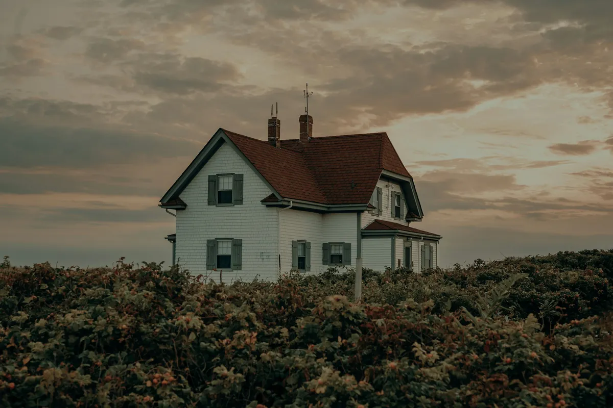

New England roots. Lasting character.
A lasting impression.
Built into every detail.
Premium PVC trim, sheets and cornerboards. For the homes we love. And the details we want to keep.
For builders, architects & homeowners.

The Novex collection
The right detail. In every dimension.
Three versatile materials.
One considered exterior.

Trim boards
Clean lines for windows, doors, fascia and finishing touches.
Explore trim boards
Sheets
A wider canvas for soffits, gables and custom millwork.
Explore sheetsCornerboards
One-piece profiles that bring every elevation together.
Explore cornerboardsReal architecture, shown for inspiration. Explore each product for available profiles and sizes.
Look a little closer
A home is made
in the details.
See where the collection comes together. Choose a detail to explore.
Frame the everyday.
From window casings to fascia, trim boards give familiar architecture a crisp, considered finish.
Find your trim profileThink beyond the board.
Wide PVC sheets make room for soffits, gable details, raised panels and custom exterior work.
Explore sheet sizesA clean finish at every turn.
One-piece cornerboards define an elevation with a consistent profile and fewer separate pieces.
Explore cornerboardsBuilt on New England character
New materials.
Enduring standards.
Good building carries a legacy. We’re here to carry it forward.
With established projects across New England, Novex brings a practical understanding of the homes, weather and details that make this region distinctive. From a coastal porch to a neighborhood renovation, our approach stays the same: considered materials, clear guidance and pride in the finished work.
The Novex approach
For the people who build
Your vision.
Our attention to detail.
Bring us the drawing, the material list or the question. We’ll help you work through the next step.
Work with NovexCompare profiles, finishes and dimensions for your application.
Start with your plans or quantities. Get a clear material conversation.
A Boston-based team with established projects across New England.
Let’s build something lasting.